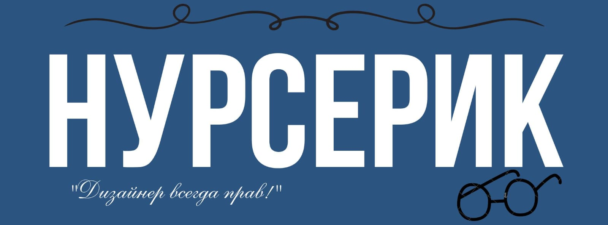
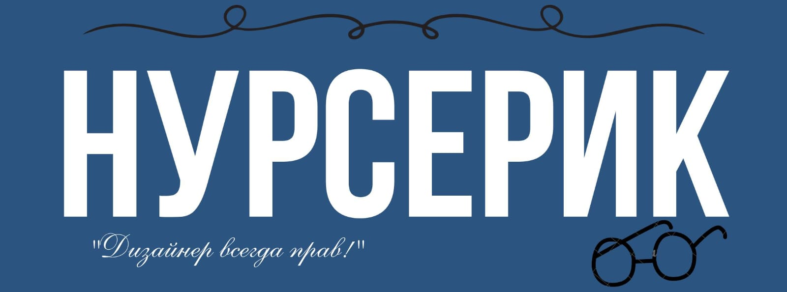
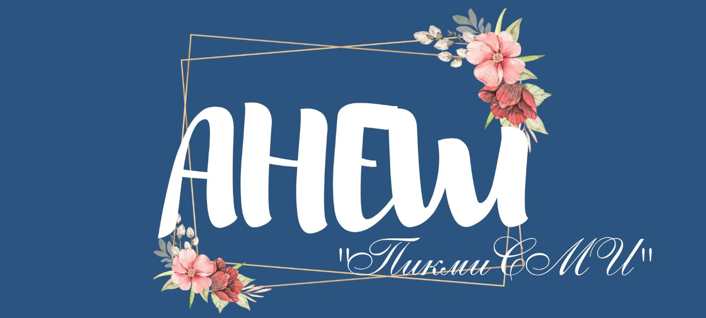
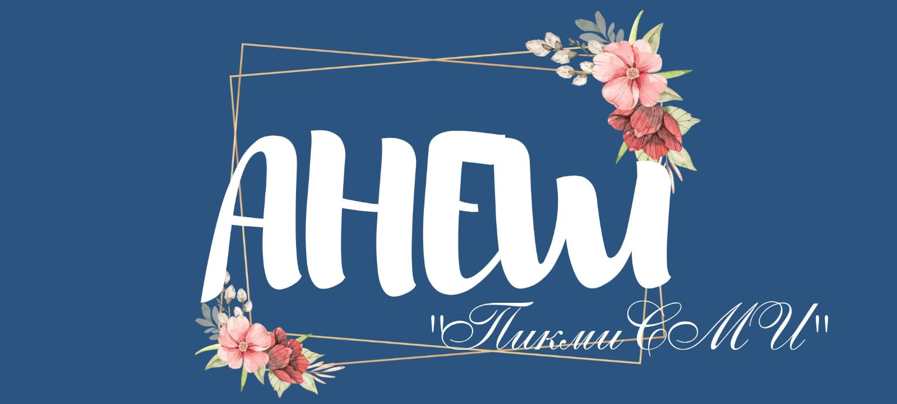
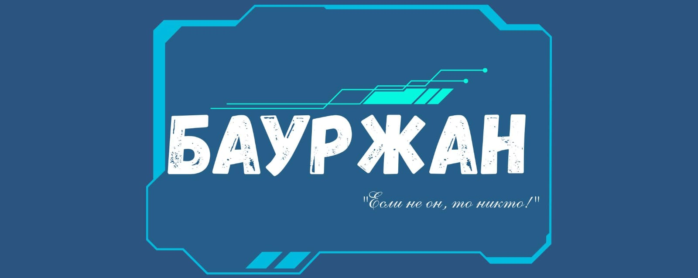
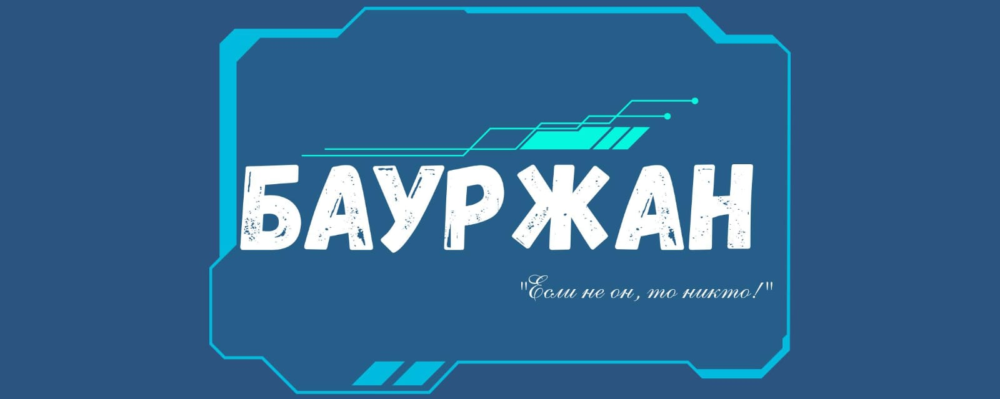

Нурсерик является графическим дизайнером команды FLL и отвечает за весь визуальный стиль проекта: от логотипа до презентаций, постеров и оформления для социальных сетей. Он стремится сделать проект ярким и запоминающимся, воплощая мечты команды.
 

Анеш-смм. Она занимается продвижением своей команды в социальных сетях. Это значит, что она оформляет и ведёт страницы команды в таких платформах, как Instagram, чтобы как можно больше людей узнали о их проекте и достижениях.
Миша — конструктор насадок в команде FizTex. Он отвечает за проектирование и сборку специальных модулей, которые помогают роботу выполнять задачи на поле. Миша продумывает каждую деталь, чтобы конструкция была надёжной, лёгкой и функциональной. Его инженерный подход поразит любого!
Арлен — программист команды. Он пишет код, чтобы робот точно выполнял задания на поле. Арлен умеет быстро находить ошибки и предлагать эффективные решения. Он увлекается технологиями и всегда стремится узнать что-то новое.
 

Бауржан — главный конструктор команды FizTex. Он разрабатывает механические решения для надёжной и точной работы робота. Его подход сочетает инженерную точность, функциональность и новизну, помогая команде успешно решать технические задачи и достигать целей.
Катя — капитан команды. Она отвечает за организацию работы: планирование, распределение обязанностей и контроль за выполнением задач. Также она следит за тем, чтобы команда двигалась к цели чётко и слаженно.